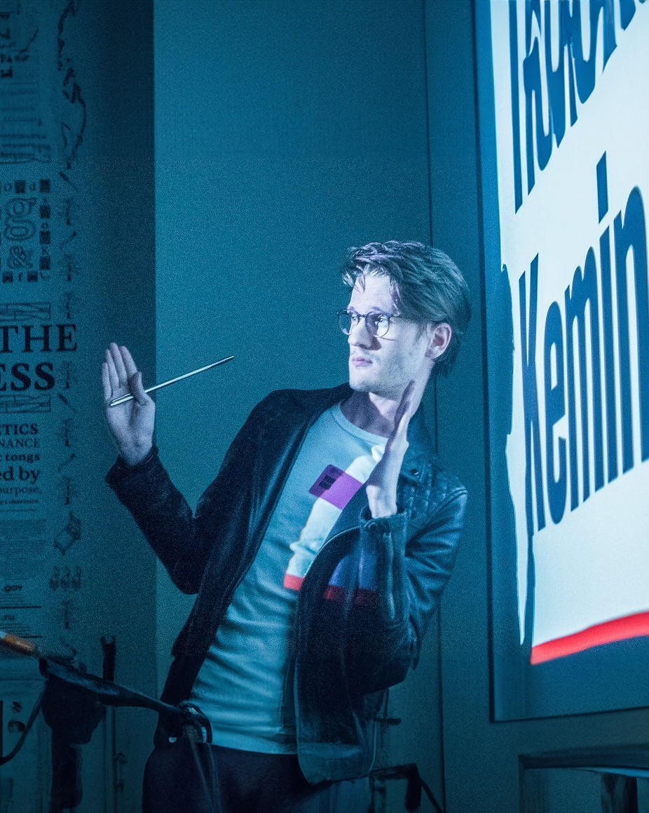

The typographic practice (and life’s work) of Mark Davis.

Mark Davis is a type designer and font engineer in Brooklyn, New York. Since 2017 he has worked as type designer and art director of his own practice, now called WORDMARK. In his words: “Effective type is my design mission: typefaces for brands and products, from one-style logotypes to open-source variable families.”
His largest project is the type for Cal.com: Cal Sans, Cal Sans UI, Text, and Geo, an open-source, eight-master, six-axis variable family of about 1,000 glyphs and 3,000 kerns, delivered 1.9 million times a week through Google Fonts. For Vercel he took over the drawings for Geist Serif, the company’s first serif, then expanded the glyph set, built the variable axis, and kerned it before its release on October 30, 2026, as the fourth Geist family. He is expanding Harvey Serif for Harvey, works on retainer for WELTKERN Type, mastered Shopbop Serif for Pentagram with Margot Lévêque, and took the NYMZO logotype to global launch with Otherward. At BuzzFeed News, in 2016, he designed the Trump “BF Tiny Hand” font, which went viral.
He studied at Type@Cooper Condensed at The Cooper Union, critiqued by Christian Schwartz and Tobias Frere-Jones, with a guest critique by Jonathan Hoefler, after a BA in art and graphic design at Taylor University, where he was named Designer of the Year. He then moved from the Midwest to Brooklyn to start at Font Bureau, chosen and placed by Roger Black, where he developed typefaces under Cyrus Highsmith and made specimens for its retail typefaces. He has taught at Queens College, the School of Visual Arts, and the Rhode Island School of Design. In 2026 Creative Boom named Cal Sans UI one of the best new typefaces of April, and Abduzeedo featured it.
Talks and teaching
- 2023
Rhode Island School of Design
- 2022
School of Visual Arts
- 2022
Queens College
- 2021
“Fonts You Should Know,” The Futur 80K+ views
- 2020
The Futur, live interview 100K+ views
Press
- 2026
Creative Boom: The best new typefaces for April 2026, Cal Sans UI
- 2026
Abduzeedo: a feature on Cal Sans UI
- 2021
The Late Show with Stephen Colbert: Officially In Charge, President Biden Begins Dismantling His Predecessor’s Legacy, Tiny Hand in the monologue
- 2020
The Futur, live interview with Chris Do 100K+ views
- 2019
The Tonight Show Starring Jimmy Fallon: Donald Trump’s Tiny Hand Font
- 2016
Fast Company: Donald Trump’s Crazy Handwriting Is Now a Free Font Called Tiny Hand
- 2016
Creative Bloq: BuzzFeed’s new typeface will be your new most hated font
- 2016
Dezeen: Donald Trump’s handwriting turned into Tiny Hand typeface
- 2016
Observer: Donald Trump’s Handwriting Is Now a Free Font
- 2016
Huh Magazine: Trump’s handwriting is now a free font called Tiny Hand
- 2016
The Next Web: Tiny Hand font mimics Trump’s handwriting and is now available for free
- 2016
The Daily Dot: Donald Trump’s Handwriting Is Now a Free Font
- 2016
The Observatory, episode 115: Thick and Blunt
Earlier work
- 2019–2022
Tronvig, Junior Art Director, then Art Director, Brooklyn
Primary in-house designer and art director for client marketing and branding: display banners, OOH print, digital OOH video, and wild postings, plus the agency’s own rebrand. Clients included NMWA and VNSNY.
- 2017–2019
SME Branding, Junior Art Director, New York
Sole designer on select accounts and the team’s typography and print layout specialist, for the Kentucky Derby, Ticketmaster, MLBPA, SUNY Geneseo, the University of North Dakota, Texas Tech, and The Big South.
- 2017
NBCUniversal, Creative Agency Design Contractor, New York
New logotypes from pen sketch to final, corporate branding initiatives, and logotype consulting.
- 2016
BuzzFeed News, News Design Contractor, New York
Review templates, a podcast brand, the live election-night TV set, lettering and illustrations for dozens of articles, and the “BF Tiny Hand” Trump handwriting font.
- 2015–2016
Font Bureau, Font Design Intern, Design & Marketing Contractor, Brooklyn
Developed Ambulia Text, Abagnale, and Gaussian Elongated and Extended under Cyrus Highsmith; retail specimens; the @FBtypeset interactive marketing tool, with Chris Lewis.
- 2014–2015
Crossway, Design Contractor, Wheaton, Illinois
Illustrations for three books of 1,360+ pages, 70+ book covers mastered for national and international presses, and a restored ESV logo with its app icons.
- 2014
Typefounding, Font Design Intern, St. Louis
A typeface based on work by Ed Benguiat and Donald Roos, pending distribution by House Industries, and expanded character sets for eight House Industries typefaces.
Select clients
WELTKERN, Claude Type, Cal.com, Nike, NBCUniversal, Ticketmaster, BuzzFeed News, Font Bureau, WWD, VNSNY, Helen Keller Intl, Type Network, UND, Kentucky Derby, SUNY Geneseo, NMWA, Texas Tech, The Big South, Taylor University, Crossway, Bureau Gravity, Nick Mrozowski, Dennis Huynh, Dan Pulcrano, Ben Kiel, and Luke Shuman.
Skills
Type design, logotype design and customization, editorial design, lettering, typography, photo direction, vector illustration, large-format printing, and Twitter, Facebook, and Instagram ads.
Contact
- Code
- GitHub